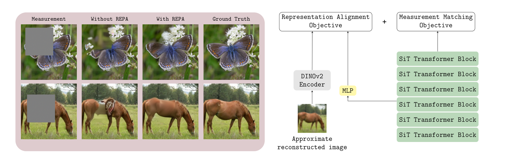
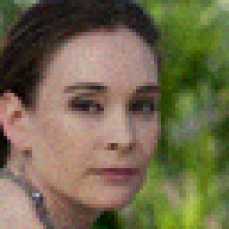
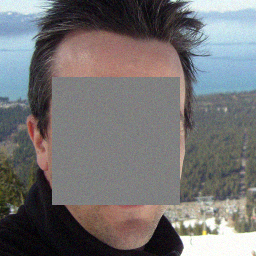
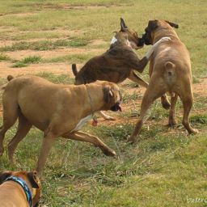
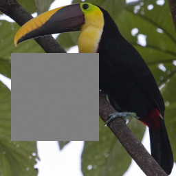
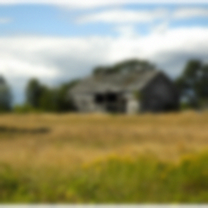
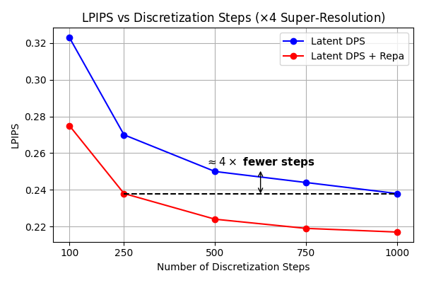
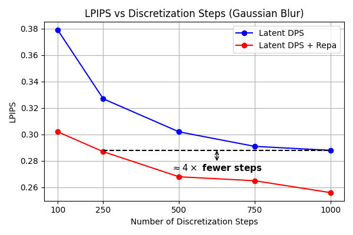
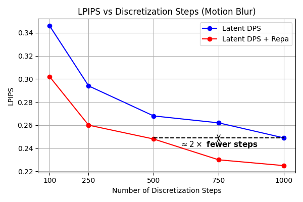
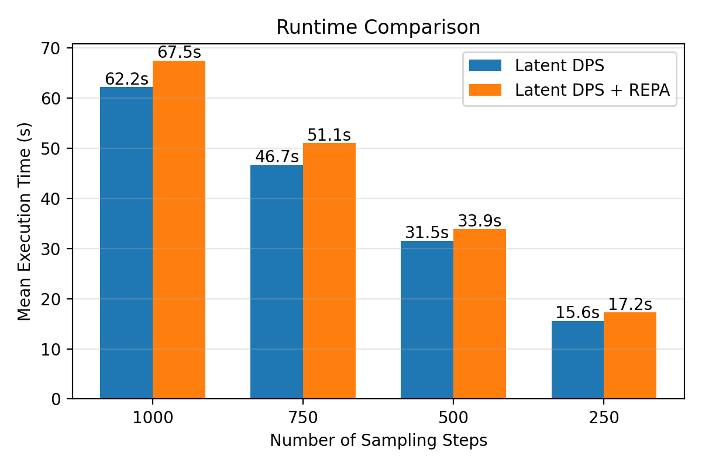

Abstract
Enforcing alignment between the internal representations of diffusion or flow-based generative models and those of pretrained self-supervised encoders has recently been shown to provide a powerful inductive bias, improving both convergence and sample quality. In this work, we extend this idea to inverse problems, where pretrained generative models are employed as priors. We propose applying representation alignment (REPA) between diffusion or flow-based models and a DINOv2 visual encoder, to guide the reconstruction process at inference time. Although ground-truth signals are unavailable in inverse problems, we show that aligning model representations of approximate target features can substantially enhance reconstruction quality and perceptual realism.
We integrate REPA into multiple state-of-the-art inverse problem solvers, and provide extensive experiments across inverse problem tasks — super-resolution, box inpainting, Gaussian deblurring, and motion deblurring — confirming that our method consistently improves reconstruction quality, while also reducing the number of discretization steps required to reach the same performance level as the underlying solver. Please refer to our paper for the details of the method.
Qualitative Results
Repa consistently improves two state-of-the-art latent solvers, Latent DPS and ReSample. Drag the handle right to reveal the result with REPA, left for without — the measurement and reference for each example are shown below.
FFHQ
Super-Resolution (×4)

Box Inpainting

Gaussian Deblurring
ImageNet
Super-Resolution (×4)

Box Inpainting

Gaussian Deblurring

Effect on number of discretisation steps
Beyond improving perceptual quality, Repa lets solvers reach the same LPIPS with far fewer sampling steps than the underlying solver alone.




BibTeX
@inproceedings{sfountouris2026align,
title = {Align \& Invert: Solving Inverse Problems with Diffusion and Flow-based Models via Representation Alignment},
author = {Sfountouris, Loukas and Daras, Giannis and Giampouras, Paris},
booktitle = {Advances in Neural Information Processing Systems (NeurIPS)},
year = {2026}
}